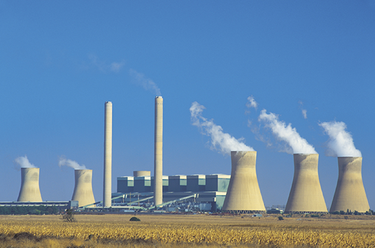
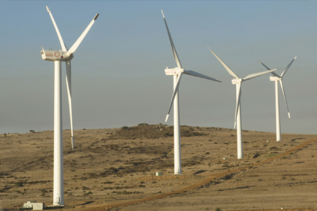

Energy demand is set to outstrip energy supply in the very near future in South Africa. In a bid to bring electricity to every household and to move to cleaner, more sustainable energy generation, the government has put plans in place to decrease the use of conventional energy resources and increase the use of non-conventional energy resources.

Conventional energy production depletes non-renewable natural resources, damages the environment upon extraction and pollutes the atmosphere in the production process.

Non-conventional energy generation makes use ofrenewable resources, is more sustainable and generally has a smaller impact on the environment.